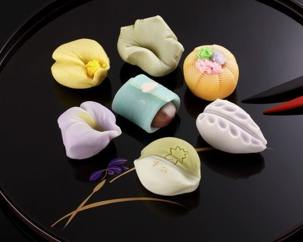
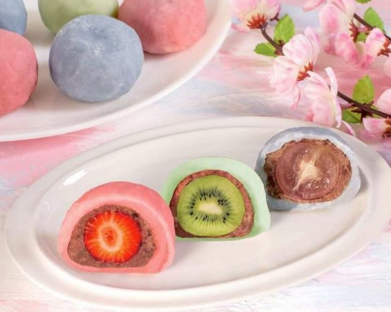
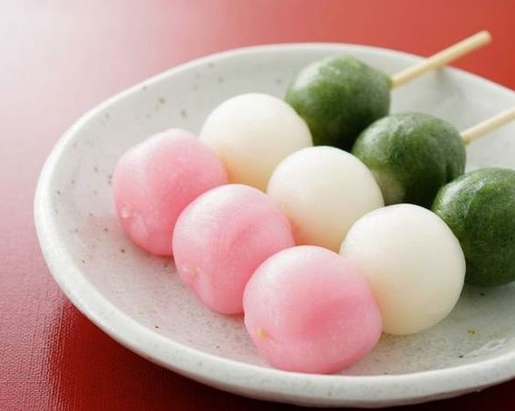
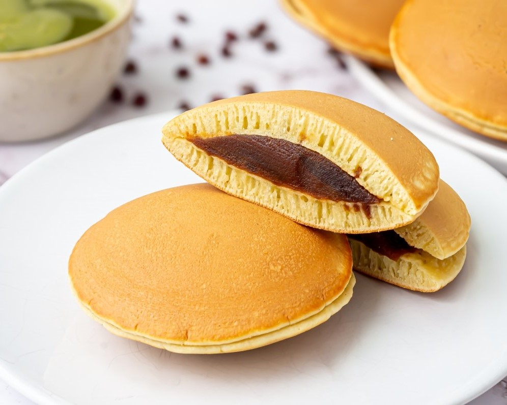

|

Wagashi
Disfruta de una auténtica experiencia japonesa con nuestros Wagashi, Q20.00 |

Daifuku
Descubre el Daifuku, una delicia tradicional japonesa Q15.00 |

DangoSumérgete en la tradición japonesa con nuestro Dango Q15.00 |

Dorayaki
Este delicioso pastel consiste en dos esponjosas tortitas Q25.00 |